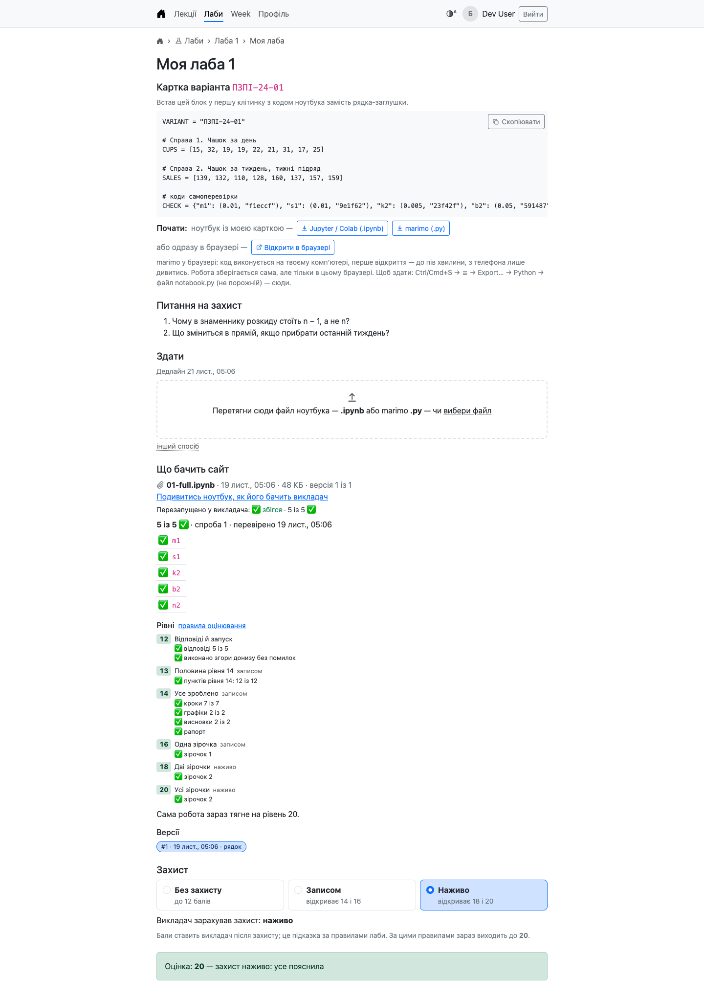
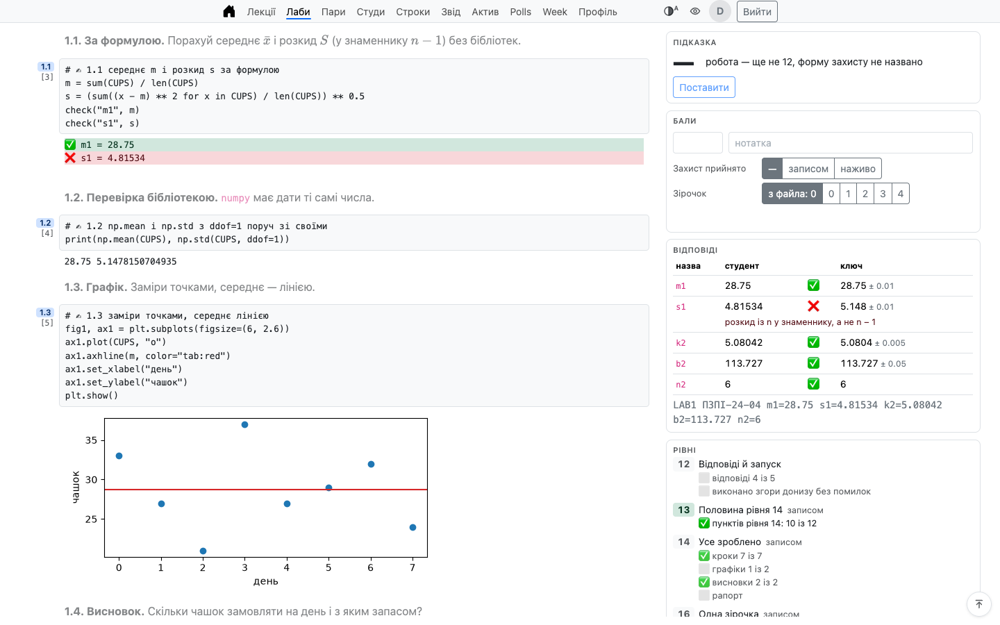
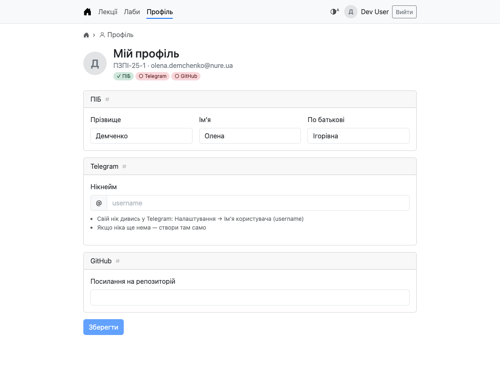
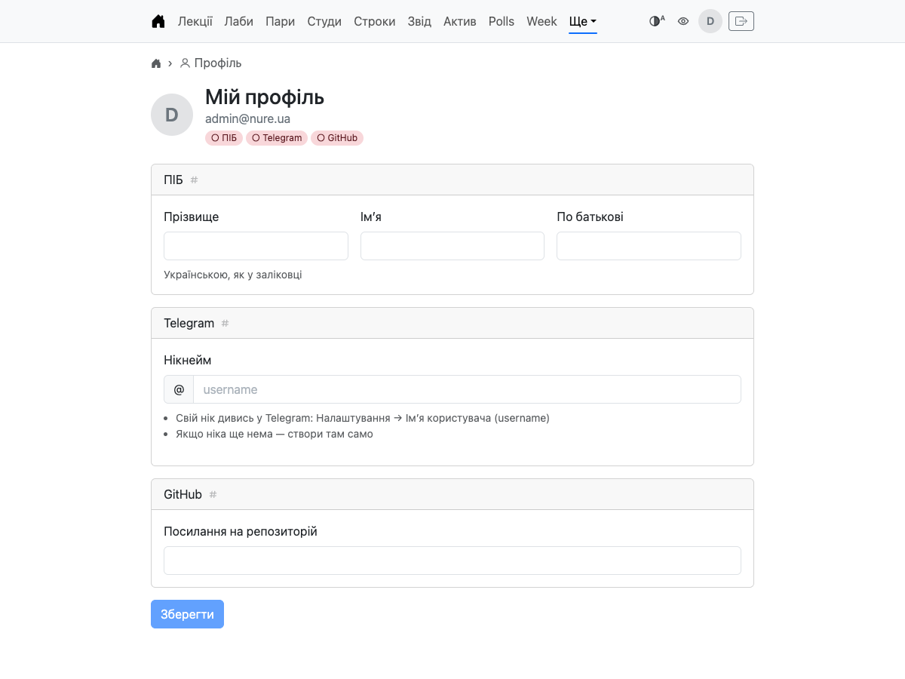

«Моя лаба» очима студента
стенд, вигадані дані- Що видно
- Картка варіанта, кнопки старту, здача файлом, «що бачить сайт», рівні, захист, оцінка.

знімок обрізано по висоті — клік відкриває повний
python-labs · T367 · стан сайту ods після ночі 19.11
гілка ods · 231 комітів без push · 20.11.2026, ніч · сесії не будились: стан зібрано з їхніх витягів, git і дерева
Усі чотири сесії довели роботу до кінця, і все закомічено. Студенти досі нічого не бачать: ods ще не на сервері. До нього двадцять кроків, чотири з них зроблено.
9c0a119 або новіший.9c0a119; обидва фронти збираютьсяСайту ods на сервері ще нема: домен ods.labs.in.ua уже дивиться на машину, але вона на нього не відповідає. Нижче — порядок за планом деплою у vps-infra (T76), звірений із тим, що нічні сесії додали після нього.
Push гілки ods збирає лише статику ods. Python їде з main, а main на GitHub стоїть на 29.10. Тож цієї ночі можна викласти тільки ods.
Python — це 271 коміт за три тижні й окрема розмова, див. нижче.
План і три README радили git push origin main main:ods. Тепер уся робота на гілці ods, а локальна main відстала: така команда не привезе на ods нічого нового і відвезе на python стан 13.11.
Правильно: git push origin ods. README я виправив; у плані T76 у vps-infra рядок лишився старий.
Push ods сам збирає й публікує статику в www-ods.
Клієнт «ods-labs prod» створено 17.11, ключі в 1Password. Входять лише пошти @nure.ua, тож і ADMIN_EMAILS — твоя пошта @nure.ua.
Згенеровано 19.11. Якщо не встиг зберегти в 1Password: значення для сервера — claude: плюс те, що стоїть у ODS_TOKEN у .site/.env.
Слідів, що його створено, я не знайшов. TG_BOT_TOKEN на сервері обов’язковий: без нього крок із ключами не завершиться.
У vps-infra, файл apps/ods-labs/units/ods-labs-web.conf, дописати рядок і запушити vps-infra. Зараз діє стандартні 1100 КБ.
BODY_MAX=20MB
Вичитані тексти лежать на диску. Скажеш «лий» — заллю їх у дев-базу до наступного кроку, і старі тексти на сервер не потраплять. Запасний шлях — після деплою: bin/content -t ods push lectures.
Дев-база цілком не їде: у ній дев-адмін і твої кліки. Їде копія змісту. План T76 бере лише сторінки й картинки; без карток, будови ноутбуків і сторінок лаб здача не працює, тому перелік розширено. Чотири тестові картки лаби 1 відсіяно.
mongosh ods --quiet <<'JS'
const seed = "ods_seed", plain = ["guide", "media", "lab_pages", "lab_shapes"];
db.getSiblingDB(seed).dropDatabase();
for (const c of plain) db[c].aggregate([{ $out: { db: seed, coll: c } }]);
db.variants.aggregate([{ $match: { group: { $ne: "ТЕСТ" } } }, { $out: { db: seed, coll: "variants" } }]);
const s = db.getSiblingDB(seed);
print([...plain, "variants"].map((c) => c + " " + s[c].countDocuments()).join(" · "));
JS
Має надрукувати: guide 47 · media 150 · lab_pages 27 · lab_shapes 5 · variants 310. Команду перевірено на пробній копії: числа саме такі, дев-база не змінилась. Якщо лекції заливатимуться в дев-базу пізніше — повторити.
Лаби 4–5 сховано, здача лаб 1–2 на сайті закрита: коміти cf38ad0 і 9c0a119. Налаштування їдуть разом із кодом, у копію бази нічого додавати не треба.
Після push перевірити, що тема останнього коміту origin/www-ods дорівнює sha origin/ods: сервер чекає саме на це.
git push origin 07f7f5f:ods git fetch -q origin && git log -1 --format=%s origin/www-ods && git rev-parse origin/ods
07f7f5f — код коміту 9c0a119, на якому пройшли збірки й смоуки, плюс документи. Звичайне git push origin ods забере й те, що сесія T368 закомітить пізніше: вона ще пише перенос файлів із Telegram. Статика збирається з самого коміту, незакомічене в дереві в неї не потрапляє.
ssh vv3Push vps-infra везе 17 комітів, серед них команда vv up, якої на сервері ще не запускали. План має показати лише [=].
sudo vv self-update sudo vv up python-labs --plan sudo vv check --all
Перший repo init вийде з кодом 77 і покаже ключ: додати його в GitHub, Deploy keys, без права запису. Потім повторити.
sudo vv tenant add ods-labs sudo vv repo init ods-labs sudo vv venv sync ods-labs
У редакторі: GOOGLE_CLIENT_ID, ADMIN_EMAILS, TG_BOT_NAME; FAKE_USER_EMAIL порожній. Потім прихованим вводом: GOOGLE_CLIENT_SECRET, TG_BOT_TOKEN, AGENT_TOKENS. Останній рядок — з ноутбука, до першого старту.
sudo vv db add ods-labs sudo vv env edit ods-labs cd vps-infra && ./vv/bin/vv db push ods-labs vv3 --from ods_seed
Спершу free -m: вільно менше 400 МБ — зупинитись. ods додає близько 375 МБ на машині з 1,9 ГБ.
sudo vv unit apply ods-labs sudo vv start ods-labs --kill-test sudo etckeeper commit "vv: unit apply + start ods-labs"
Чекаємо відповідь 200 і server: uvicorn.
sudo vv site apply ods-labs curl -sI https://ods.labs.in.ua/api/me
У vps-infra, apps/ods-labs/app.conf, прибрати рядок STATE=planned, запушити. Чекаємо ok <sha>.
sudo vv self-update sudo deploy ods-labs sudo vv timer on ods-labs
Увійти адміном, на /students імпортувати список із групами ПЗПІ-24-N. Без нього кожен новий студент «очікує» і лаб не бачить. Списку потоку ods на диску я не знайшов.
На /deadlines поставити строк лаби 2 і лаби 3: у базі їх нема.
Око в меню → /labs/3/my: взяти картку, здати ноутбук, більший за 1,1 МБ. Це перевіряє межу розміру. Виконаний ноутбук лаби 3 має дати рядок «Ноутбук на зв’язку».
Має показати 47 сторінок; план T76 каже 20, це застаріло.
~/.venvs/python-labs/bin/python bin/guide -t ods ls
Один раз зібрати образ; у боті — «Прив’язати бота», потім /here.
~/.venvs/python-labs/bin/python bin/nbrun build
Кроки 10–15 — блоки 1–6 плану vps-infra/.dev/apps/ods-labs/.t/T76--ods-labs/log/; очікувані відповіді кожної команди — там.
git push origin ods:main: 271 коміт, злиття не потрібне. Сервер сам оновить залежності й перезапустить сайт і бота.catalog_io.py core. Інакше жодна картка не в основі, і все у студентів стане «за запитом» (звіт T321).ANTHROPIC_API_KEY необов’язковий; без нього панель ШІ пише «ще не підключено».Механізм здачі й перевірки готовий для всіх п’яти лаб, нова розкладка текстів — поки лише в лаби 3. Студенти побачать це після деплою. Знімки нижче зроблено на стенді з вигаданими лабою й студентами.
Твоє рішення з диктовки 00:24 — його втілила нова сесія T368 «Лабораторні звіти і реєстрація студентів».
Уже в гілці: коміти cf38ad0 і 9c0a119. Студентові лаб 4–5 не існує; у лабах 1–2 текст і картка є, а здача на сайті відповідає «здаємо викладачеві в Telegram». Ти на /labs маєш у кожному рядку перемикач «сховано · Telegram · сайт». Сам потік здачі — у тікеті T370.
| Лаба | Видано | Дедлайн | Тексти на сайті | Здача | Застереження |
|---|---|---|---|---|---|
| 1 | так, через чат | у базі не задано | стара розкладка: умова, розбір, marimo | на сайті закрита — тобі в Telegram | — |
| 2 | так | ≈ 21.11 з твоїх слів; у базі не задано | стара розкладка | на сайті закрита — тобі в Telegram | дедлайн наступного дня після пари |
| 3 | видаєш зараз | у базі не задано | нова огляд, справи 1–4, «Ноутбук», «Захист» | файлом на «Моїй лабі»; check() сам шле результат на сайт | надсилання з токеном наживо ніхто не пробував |
| 4 | ні | — | стара розкладка | сховано від студентів | нова розкладка — після твого погляду на лабу 3 |
| 5 | ні | — | стара розкладка | сховано від студентів | у marimo в браузері падає перша зірочка |
У дев-базі на кожну лабу 60 карток потоку, одна демо й одна нульова; карток ще ніхто не взяв, жодного файла не здано. Механізм здачі готовий для всіх п’яти лаб — відкрити лабу потім можна перемикачем на /labs, без нового коду.
.py/labs/N/resultsпотік і «Де помиляються»bin/nbrunперезапуск у Docker: числа справді дає код
знімок обрізано по висоті — клік відкриває повний


| Рівень | За що |
|---|---|
| 12 | усі відповіді ✅, ноутбук виконано згори донизу без помилок |
| 14 | плюс усі кроки, графіки, висновки й рапорт |
| 16 · 18 · 19 · 20 | плюс одна, дві, три, усі чотири зірочки |
| 13 | неповна робота рівня 14 — сформульовано трьома способами, див. вибори |
| Захист | Не вище |
|---|---|
| без захисту | 12 |
| записом | 16 |
| наживо | 20 |
Підказка сайту — менше з двох чисел: рівень самої роботи і стеля. Не зарахували захист — лишається рівень без захисту, повтор без штрафу.
1. Сайт курсу запрацював: лекції, тексти лаб і здача лаби 3 2. Сьогодні — зареєструйся: вхід через Google з поштою @nure.ua і прив’яжи бота 3. Лаби 1 і 2 — як раніше, мені в Telegram; хто вже надіслав, нічого повторювати не треба 4. Лаба 3 здається на сайті: «Моя лаба» → номер варіанта → ноутбук із карткою → файл 5. Номер варіанта — твій номер у списку потоку; назвав раз — далі сайт пам’ятає 6. Перед здачею — «Перезапустити й виконати все»; без цього нема рівня 12 7. Здавати можна кілька разів, рахується остання версія 8. Число на сайті — підказка; бали ставлю я, а все вище 12 відкриває лише захист 9. marimo: рядок відповідей встав руками через «інший спосіб»; рівні з’являться після мого перезапуску
📢 Сайт курсу запрацював: https://ods.labs.in.ua Що зробити — 5 хвилин: 1️⃣ Увійти з поштою @nure.ua 2️⃣ У профілі прив’язати Telegram-бота 3️⃣ Лаби → Лаба 3 → «Моя лаба» → назвати свій номер у списку потоку 🎁 Хто зробить усі три кроки до неділі 22.11, 23:59 — +1 бонусний бал 📌 Лаби 1 і 2 — як і раніше: файл ноутбука мені в особисті. Вдруге на сайт нічого завантажувати не треба: я сам перенесу ваші файли, з часом вашого повідомлення ⏰ Дедлайн лаби 2 — субота 21.11, 23:59 🧪 Лаба 3 — уже на сайті, і здаємо її теж там: «Моя лаба» → перетягнути файл ноутбука. Дедлайн — <п’ятниця 04.12, 23:59>
Текст склала сесія T368 за твоєю диктовкою; джерело — тікет T370, розділ «Оголошення студентам». У кутових дужках — те, що впишеш сам. Надсилати після того, як імпортуєш список потоку: інакше кожен після входу «очікує» й не зможе прив’язати бота.
/labsперелік і «Про лаби» → оцінювання/labs/3 → «Справа 1»як виглядає нова лаба/labs/3/myтестовий студент бере демо-картку, кидає порожній ноутбук/labs/3/results не виводититам імена студентівСам зміст лаби 3 для розповіді — на сторінці для ПЗ: ліворуч те, що бачать студенти, праворуч простими словами.
Новий користувач «очікує» і лаб не бачить, доки ти його не активуєш або не імпортуєш список потоку з групами ПЗПІ-24-N.
Зробити на сервері до оголошення: /students.
Сервер приймає тіло запиту до 1100 КБ. Ноутбук із графіками більший, студент побачить «Помилка 413».
Підняти межу до ≈ 20 МБ у налаштуваннях ods на сервері.
У базі не задано жодного. На «Моїй лабі» рядка «Дедлайн» не буде.
Поставити на /deadlines після деплою.
Ніхто не відкривав шаблон у справжньому Colab і не здавав файл звідти.
Один прогін після деплою: взяти ноутбук лаби 3, виконати, здати.
Одна копія на браузер: повторне відкриття чистого шаблону стирає роботу. Експорт до збереження дає порожній файл.
Сказати вголос або сховати кнопку — T362 Q5.
Лаби 4–5 сховано, здача лаб 1–2 на сайті закрита. Сесія ще пише перенос файлів із Telegram; першому деплою він не потрібен.
Перед push глянути git log: останній коміт — 9c0a119 або новіший.
Сесій було чотири, перед ними п’ята — вона винесла спільне в ядро, і на цьому стоять усі інші. Три сесії закінчили самі, з підсумком і комітами, між 04:55 і 05:56. Обірвалась одна, лекції: о 06:46 двічі впав запит до моделі, і підсумку вона не написала.
Чому сесія лекцій «запрацювала знову»: сплячу сесію будить записка від іншої сесії. О 15:28 прийшла записка від сесії ігротеки, лекції прокинулись і вперлись у ліміт. О 23:51 сесія «Незакомічені зміни ігор» на твоє прохання закомітила їхні залишені документи й написала про це, лекції прокинулись удруге й довели роботу до кінця: коміти 07ce081 і b106134 о 00:26.
«Формочка для завантаження лабораторних ОДС» · T354, T356, T362
.ipynb і marimo .py, показує ✅ / ❌ і рівень. Тобі — таблиця потоку з «Де помиляються» і стіл перевірки однієї роботи. bin/nbrun перезапускає роботи в Docker без мережі. У дев-базі 314 карток і будова п’яти лаб.bin/nbrun build.сторінка-звіт зі знімкамистенд: 127.0.0.1:5032
«Третя лабораторна: перевірка і сайт» · T355, T358
check() сам шле результат на сайт.«Сторінки лабораторних і лекцій» · T357, T360, T361
/labs з розділом «Про лаби» і лабою 3 на сім сторінок; архів старих лаб лише тобі; лекції з пошуком; око «Очима студента» в меню; bin/content push; три пари зведено чернетками.bin/content проти сервера.сторінка-звіт зі знімкамистенд: 127.0.0.1:5033
«Перевірка та оформлення лекцій» · T359, T363
сторінка-оглядпереглядач: 127.0.0.1:5036/?lec=7&mode=slides
«Перенос спільного коду Python Labs в ODS» · T352, T353
На ods сторінки «Тиждень» і «Мій тиждень» тепер відкриваються лише викладачеві. Пункт «Week» у меню студента зник сам: меню бере доступ із маршруту. На python нічого не змінилось.
sites/ods/vue/src/router.js - '/my/week' … access: 'active' - '/week/:day' … access: 'active' + '/my/week' … access: 'admin' + '/week/:day' … access: 'admin'
Коміт 4a33404. Повернути студентам — ті самі два слова назад.
Бачить сторінку «Лише для викладача» з рядком «Сторінка /week студентам поки недоступна» і кнопкою «На головну».
Запис власного тижня в API лишився: студент дістав би тільки свою сітку, чужих даних не видно.


стенд зі зібраного фронту, вигадані користувачі · клік відкриває весь знімок
П’ять сесій лишили п’ять тікетів із 49 питаннями; відповідей поки нема в жодному. Скрізь діє «мовчання = a», і «a» вже стоїть у коді й текстах. Три питання мовчанням не закриваються.
Без твого слова на сервер поїдуть тексти від 29.09: зі 118 помилками змісту, які на диску вже виправлено, і з російськими фрагментами.
Раджу «так», і до того, як знімати базу для сервера.
План деплою копіює з дев-бази лише сторінки й картинки. Картки варіантів, будова ноутбуків і сторінки лаб у нього не входять, а без них «Моя лаба» порожня.
Розширити перелік; подробиці — в розділі про деплой.
Сторінка «Оцінювання» обіцяє: «викладач оголосить на занятті». Дедлайн лаби 2 — наступного дня після пари. Варіанта «a» тут нема.
Правило — у T225 Q7–Q9; там рекомендовано «a».
Два питання ти вже закрив диктовкою 00:24: T361 Q7 — лаби 4–5 сховати, і T362 Q1 — лаби 1–2 у Telegram, з лаби 3 файл на сайті. Трете, тиждень на ods (T353 Q4), закрито твоїм проханням у цій сесії.
| Питання | Що стоїть зараз | Чому глянути |
|---|---|---|
| T358 Q3 | П’ять речень політики на спільних сторінках: стеля 12 без захисту, ШІ, перездачі | студенти вперше прочитають їх письмово |
| T358 Q1–Q2 | Що радити у Справі 4, коли дані варіанта поводяться інакше, ніж у демо | за цим пишуть висновок лаби 3; міняти після видачі — плутанина |
| T362 Q2, Q4 | Студент бачить «робота тягне на рівень N» з першого завантаження | можуть сприйняти як обіцянку; «b» — лише драбина |
| T362 Q5 | Кнопка «marimo в браузері» є в усіх, з попередженням | робота живе в одному браузері |
| T363 Q14, Q15 | Оргслайди лекції 1 — з іншого семестру; у лекції 12 стоїть «Тема 13» | студент побачить чужі правила курсу |
| T353 Q2 | Поле GitHub у профілі ods лишилось | цим лабам GitHub не потрібен |
T353 Q1 і T362 Q8 питають про одне, а «a» в них протилежні: «лише твоє слово» і «сайт рахує сам». У коді зараз лише твоє слово: після дедлайну лаби 2 «Строки» покажуть усім «без репозиторію». Бачиш це тільки ти.
Три формулювання: «3–4 пункти з п’яти» в рішенні про рівні, «робота рівня 14 неповна» на сторінці оцінювання, «не менше половини пунктів рівня 14» у коді. Потрібне одне.
Решта, близько тридцяти питань, може чекати. Тікети: .dev/ods/.t/T358-Q…, T361-Q…, T362-Q…, T363-Q…, .dev/platform/.t/T353-Q….
Так, і це видно з учорашнього. О 15:28 одна записка «я працюю над ігротекою, мої файли такі» пішла всім живим сесіям. П’ять сесій ods прокинулись, перечитали весь свій контекст і відповіли трьома рядками: «мене це не зачіпає».
.dev/.sessions/. Чотири витяги разом — 190 КБ тексту, цей звіт зібрано з них.| Що | Чим | Результат |
|---|---|---|
| Стан сесій | витяги .dev/.sessions/, фінальні репліки, git log, дерево | чотири з чотирьох завершили; незакоміченого коду нема |
| Збірка обох фронтів | vite build на копії коміту 9c0a119 | проходить |
| Смоуки ods | 7 файлів, разом із новими перевірками сховку лаб | 220 / 220 |
| Смоуки платформи | 24 файли, запущені з кожного сайту | 711 / 711 двічі |
| Смоуки python | 19 файлів | 740 / 740 |
| Тиждень | стенд зі зібраного фронту, headless Chrome: студент, «Очима студента», викладач — на коміті до правок T368 | консоль і мережа чисті |
| Команда копії бази | прогін у пробну базу | числа збіглись, дев-база не змінилась |
| Сервер | dig, curl | домен є, сайт не відповідає |
| Ціна пробудження | поле usage в журналах сесій | 403–627 тис. токенів на сесію |
Один смоук платформи на копії без git дав 26 із 27: він читає останній коміт. З git — 27 із 27; на сервері код стоїть із git.
BODY_MAX=20MB у vps-infra.git push origin 07f7f5f:ods, сервер за кроками 10–15.клік або Esc — закрити